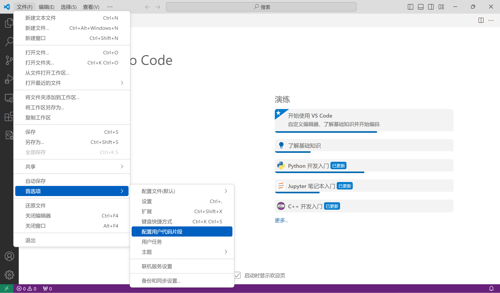
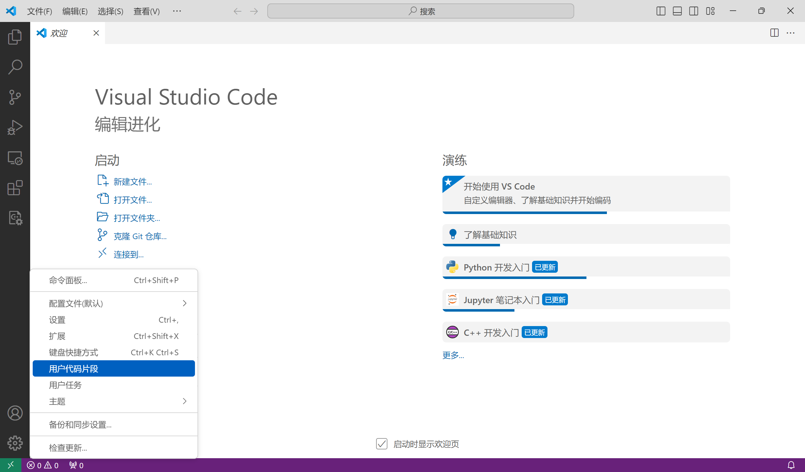
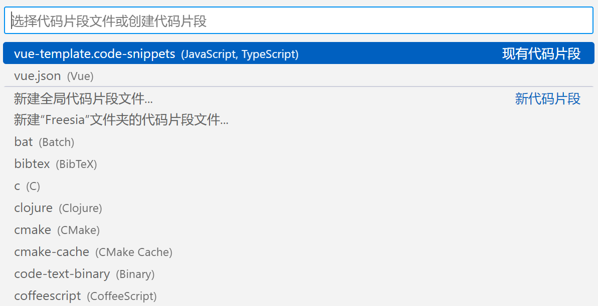
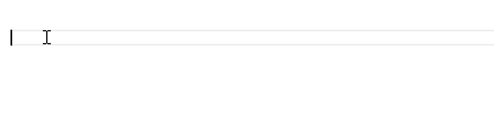

参考自 vscode - 代码模板 | zc-lee | 博客园 和 vscode markdown 开启 Snippets | 程序人生禅 | CSDN
。
使用 Visual Studio Code 编写程序时，一段代码或说明会重复出现，使用模板有利于提高我们的工作效率。
创建代码模板 通过以下两种方式找到 用户代码片段 ：
文件 > 首选项 > 配置用户代码片段。

管理 > 用户代码片段。

选择对应的语言，若无该语言，安装该语言插件即可。
注意 markdown 需要参考 CSDN 博客 进行设置。

Snippet 的内容使用 JSON 格式定义，以下为给出的例子。
1 2 3 4 5 6 7 8 9 10 11 12 13 14 15 { "Print to console" : { "prefix" : "log" , "body" : [ "console.log('$1');" , "$2" ] , "description" : "Log output to console" } }
键
值
Print to console
Snippet 名称
prefix
代码块使用快捷方式。
body
代码块内容。\\r\\n。
description
VSCode 感知到前缀，显示的说明内容。
$1,$2,$0
指定代码模块生成后，编辑光标出现位置。
使用代码模板 测试使用给出的例子，敲出 log ，出现代码模块，回车成功使用模板。

Snippet 语法 Tabstops $1 ， $2 指定代码块生成后，光标出现的位置；不同位置的相同 $1 位置同时出现光标。
Placeholders 给光标出现位置加上默认值；例如，${1:another ${2:placeholder}}；$1 处位置默认值是 another。
Choice 光标位置设置多个值可供选择; 例如，${1|one,two,three|}；$1 位置处可以选择 one,two,three 中一个词填充在此处。
Variables 常用变量
TM_SELECTED_TEXT 当前选中内容或空字符串TM_CURRENT_LINE 当前行内容TM_CURRENT_WORD 光标处字符或空字符串TM_LINE_INDEX 从0开始的行号TM_LINE_NUMBER 从1开始的行号TM_FILENAME 当前被编辑文档名TM_FILENAME_BASE 当前被编辑文档名，没有后缀TM_DIRECTORY 当前被编辑文档目录TM_FILEPATH 当前被编辑文档全路径CLIPBOARD 当前剪切板内容
日期和时间相关变量
CURRENT_YEAR 当前年CURRENT_YEAR_SHORT 当前年后两位CURRENT_MONTH 月份，两位数字表示，例如02CURRENT_MONTH_NAME 月份全称，例如 ‘July’CURRENT_MONTH_NAME_SHORT 月份简写 ，例如’JulCURRENT_DATE 某天CURRENT_DAY_NAME 星期几， 例如’Monday’)CURRENT_DAY_NAME_SHORT 星期几的简写， ‘Mon’CURRENT_HOUR 小时，24小时制CURRENT_MINUTE 分钟CURRENT_SECOND 秒数
变量格式化 1 2 3 4 5 6 7 8 9 10 11 ${ TM_FILENAME/(.*)\\..+$/$1 /} | | | | | | | |-> no options | | | | | |-> references the contents of the first | | capture group | | | |-> regex to capture everything before | the final `.suffix` | |-> resolves to the filename
示例 Snippet Front-matter Page Front-matter 1 2 3 4 5 6 7 8 9 10 11 12 13 14 15 16 17 18 19 20 21 22 23 24 { "Butterfly: Page Front-matter" : { "prefix" : "Butterfly: Page Front-matter" , "body" : [ "---" , "title: " , "date: " , "updated: " , "type: " , "comments: " , "description: " , "keywords: " , "top_img: " , "mathjax: " , "katex: " , "aside: " , "aplayer: " , "highlight_shrink: " , "random: " , "---" ] , "description" : "Page" } , }
Post Front-matter 1 2 3 4 5 6 7 8 9 10 11 12 13 14 15 16 17 18 19 20 21 22 23 24 25 26 27 28 29 30 31 32 33 34 { "Butterfly: Post Front-matter" : { "prefix" : "Butterfly: Post Front-matter" , "body" : [ "---" , "title: " , "date: " , "updated: " , "tags: " , "categories: " , "keywords: " , "description: " , "top_img: " , "comments: " , "cover: " , "toc: " , "toc_number: " , "toc_style_simple: " , "copyright:" , "copyright_author: " , "copyright_author_href: " , "copyright_url: " , "copyright_info: " , "mathjax: " , "katex: " , "aplayer: " , "highlight_shrink: " , "aside: " , "abcjs: " , "---" ] , "description" : "Post" } , }
Tag Plugins Note（Bootstrap Callout） 1 2 3 4 5 6 7 8 9 10 11 12 13 { "Butterfly: Note(Bootstrap Callout)" : { "prefix" : "Butterfly: Note" , "body" : [ "{% note $1 $2 %}" , "$3" , "{% endnote %}" , "// [class]: default/primary/success/info/warning/danger" , "// [style]: no-icon/simple/modern/flat/disabled" ] , "description" : "Bootstrap Callout" } , }
Gallery Group 1 2 3 4 5 6 7 8 9 10 11 12 { "Butterfly: Gallery Group" : { "prefix" : "Butterfly: Group" , "body" : [ "<div class=\"gallery-group-main\">" , "{% galleryGroup '$1' '$2' '/Gallery/$3' $4 %}" , "// {% galleryGroup name description link img-url %}" , "</div>" ] , "description" : "Gallery Group" } , }
1 2 3 4 5 6 7 8 9 10 11 { "Butterfly: Gallery" : { "prefix" : "Butterfly: Gallery" , "body" : [ "{% gallery %}" , "" , "{% endgallery %}" ] , "description" : "Gallery" } , }
Tag Hide Inline 1 2 3 4 5 6 7 8 9 10 { "Butterfly: Tag Hide - Inline" : { "prefix" : "Butterfly: Tag Hide" , "body" : [ "// {% hideInline content, display, bg, color %}" , "{% hideInline $1, $2, $3, $4 %}" ] , "description" : "Inline" } , }
Block 1 2 3 4 5 6 7 8 9 10 11 12 { "Butterfly: Tag Hide - Block" : { "prefix" : "Butterfly: Tag Hide" , "body" : [ "// {% hideBlock display, bg, color %}" , "{% hideBlock $1, $2, $3 %}" , "$4" , "{% endhideBlock %}" ] , "description" : "Block" } , }
Toggle 1 2 3 4 5 6 7 8 9 10 11 12 { "Butterfly: Tag Hide - Toggle" : { "prefix" : "Butterfly: Tag Hide" , "body" : [ "// {% hideToggle display, bg, color %}" , "{% hideToggle $1, $2, $3 %}" , "$4" , "{% endhideToggle %}" ] , "description" : " Toggle" } , }
Mermaid 1 2 3 4 5 6 7 8 9 10 11 12 13 { "Butterfly: Mermaid" : { "prefix" : "Butterfly: Mermaid" , "body" : [ "{% mermaid %}" , "pie" , " title $1" , " \"$2\" : $3" , "{% endmermaid %}" ] , "description" : "Mermaid" } , }
Tabs 1 2 3 4 5 6 7 8 9 10 11 12 13 14 15 16 17 { "Butterfly: Tabs" : { "prefix" : "Butterfly: Tabs" , "body" : [ "{% tabs $1 %}" , "<!-- tab $2@$3-->" , "$4" , "<!-- endtab -->" , "<!-- tab $5@$6-->" , "$7" , "<!-- endtab -->" , "{% endtabs %}" ] , "description" : "Tabs" } , }
Label 1 2 3 4 5 6 7 8 9 { "Butterfly: Label" : { "prefix" : "Butterfly: Label" , "body" : [ "{% label $1 $2 %}" , ] , "description" : "Label" } , }
waiting…